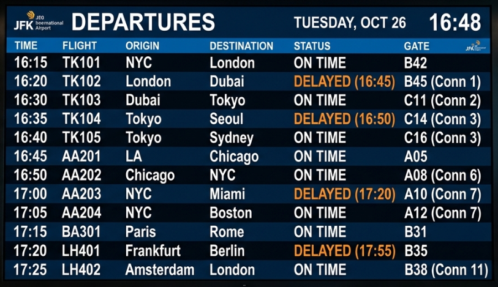

Self-Join — A Table Joined to Itself
A self-join uses two different aliases for the same table. Useful for hierarchical data like employees and their managers.
employees
id · name · dept_id · manager_id · salary
6 rows
hover to reveal SQL ↓
CREATE TABLE employees ( id INTEGER PRIMARY KEY, name TEXT NOT NULL, dept_id INTEGER, manager_id INTEGER, salary REAL NOT NULL, FOREIGN KEY (dept_id) REFERENCES departments(id), FOREIGN KEY (manager_id) REFERENCES employees(id) ); INSERT INTO employees VALUES (1,'Dana',1,NULL,9000), (2,'Omar',2,1,7200), (3,'Noa',1,1,6800), (4,'Liam',3,2,5500), (5,'Rina',NULL,1,6000), (6,'Kai',2,2,7000);
The employees Table — with manager_id
The manager_id column references employees.id — that's what makes a self-join possible.
| id | name | dept_id | manager_id | salary |
|---|---|---|---|---|
| 1 | Dana | 1 | NULL | 9000 |
| 2 | Omar | 2 | 1 → Dana | 7200 |
| 3 | Noa | 1 | 1 → Dana | 6800 |
| 4 | Liam | 3 | 2 → Omar | 5500 |
| 5 | Rina | NULL | 1 → Dana | 6000 |
| 6 | Kai | 2 | 2 → Omar | 7000 |
Dana (id 1) has manager_id = NULL — she's the top of the hierarchy. Everyone else's manager_id points to another employee's id.
Example 1 — Employee with Their Manager
Query
SELECT e.name AS employee, m.name AS manager, e.salary AS emp_salary FROM employees e LEFT JOIN employees m ON e.manager_id = m.id;
| employee | manager | emp_salary |
|---|---|---|
| Dana | NULL | 9000 |
| Omar | Dana | 7200 |
| Noa | Dana | 6800 |
| Liam | Omar | 5500 |
| Rina | Dana | 6000 |
| Kai | Omar | 7000 |
Dana is the top manager — LEFT JOIN shows her with NULL manager. Using INNER JOIN would hide her row entirely.
Example 2 — Employees Managed by Omar
Query
SELECT e.name, e.salary FROM employees e JOIN employees m ON e.manager_id = m.id WHERE m.name = 'Omar';
| name | salary |
|---|---|
| Liam | 5500 |
| Kai | 7000 |
Example 3 — Direct Reports Per Manager
Query
SELECT m.name AS manager, COUNT(e.id) AS direct_reports FROM employees m LEFT JOIN employees e ON e.manager_id = m.id GROUP BY m.id, m.name HAVING COUNT(e.id) > 0 ORDER BY direct_reports DESC;
| manager | direct_reports |
|---|---|
| Dana | 3 |
| Omar | 2 |
The key technique: alias the same table twice — e for employees, m for managers. The ON condition bridges manager_id to the manager's id.
?
Exercise
Practice self-joins on the flights table
flights
id · flight_no · origin · destination · prev_flight_id
12 rows
hover to reveal SQL ↓
CREATE TABLE flights ( id INTEGER PRIMARY KEY, flight_no TEXT NOT NULL, origin TEXT NOT NULL, destination TEXT NOT NULL, prev_flight_id INTEGER, FOREIGN KEY (prev_flight_id) REFERENCES flights(id) ); INSERT INTO flights VALUES (1,'TK101','NYC','London',NULL), (2,'TK102','London','Dubai',1), (3,'TK103','Dubai','Tokyo',2), (4,'TK104','Tokyo','Seoul',3), (5,'TK105','Tokyo','Sydney',3), (6,'AA201','LA','Chicago',NULL), (7,'AA202','Chicago','NYC',6), (8,'AA203','NYC','Miami',7), (9,'AA204','NYC','Boston',7), (10,'BA301','Paris','Rome',NULL), (11,'LH401','Frankfurt','Berlin',NULL), (12,'LH402','Amsterdam','London',11);

- Show every flight with its predecessor flight number — use LEFT JOIN so origin flights (no predecessor) appear with
NULL - Show only flights that directly follow
'TK101'(i.e. where the predecessor flight is TK101) - Count how many onward connections each flight has (how many flights list it as predecessor), sorted descending
- Find flights where the predecessor's
destinationdoesn't match the current flight'sorigin— a data-inconsistency check